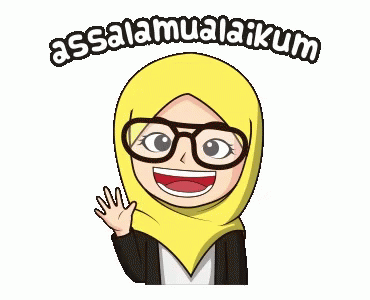

Bismillahirahmanirrahim,
First of all, I would like to thank Allah S.W.T. for giving me the courage and intensity to complete this individual assignment.
Without him, I believe that there will be no Baraka in doing this assignment.
The accomplishment and finishing outcome of this assignment required a lot of guidance from our lecturer, Madam Seri Intan Idayu.
Thank you for giving me an opportunity to do this assignment and for your guidance in order to complete this assignment on time.
Finally, I wanted to thank everyone who are directly or indirectly helping me including my fellow members,
and not forgetting my family too for helping me throughout the completion of this assessment.
This assignment cannot be completed without their effort and cooperation from them.
Last but not least, please do enjoy my personal webpage!
PLEASE VISIT MY WEBSITE 